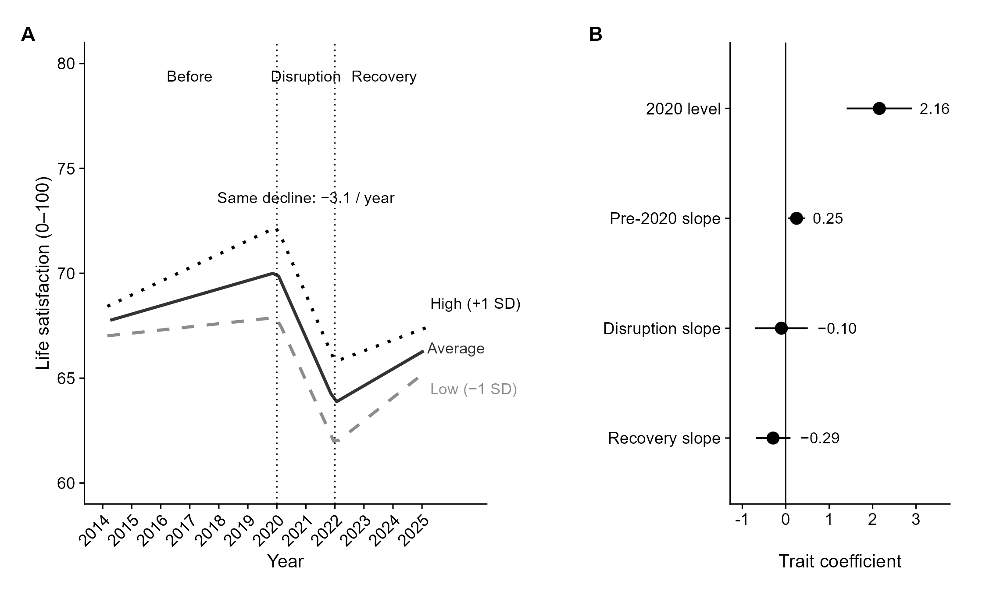
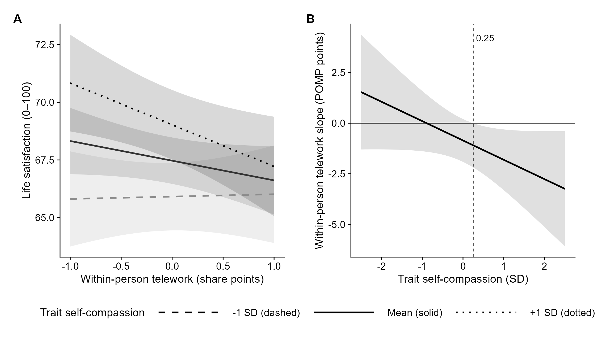

GESIS Panel.pop · employed adults, 2018 · N = 3,052
It marked who was better off. It did not slow the decline.
Self-compassion measured in 2018, before COVID-19. Three tests of one resource claim in a German probability panel.
Life satisfaction fell 6.22 points (0–100) across 2020–2021 at the same rate across the trait. The 2020 level was higher (b = 2.16). The disruption slope was not (b = −0.10).

BF01 = 51.5 against a buffering path. At ±1 SD of the trait the drop is −6.02 vs. −6.42.
Telework, 2021–2025, was not a buffer. Interaction p = .076, BF01 = 12.28. Simple slopes, read as descriptive, ran opposite the claim.

In 2024, overwhelm — not behavior. Digital overwhelm β = −.20, 95% CI [−.25, −.16]. Familiarization OR = 0.98.

What the total score was. The associations that held ran through reverse-scored self-critical items. 2024 loneliness was not a stated prediction.
| 2024 loneliness | Digital overwhelm | |
|---|---|---|
| Self-critical items (fully standardized β) | −.30 | −.21 |
| Self-caring items, entered with them | .01 | ~0 |
| Zero-order r, 2018 trait with 2024 loneliness | −.36 | — |